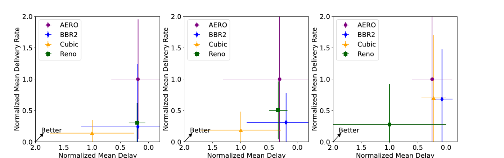

AERO The first pluggable, learning-based congestion control for QUIC.
Every major QUIC stack still runs congestion control inherited from TCP — Cubic, NewReno, BBR2 — and those heuristics leave most of the link unused. AERO replaces just the window update rule with a PPO-trained policy that reads four transport signals and returns one scalar. No kernel patches, no retraining per stack, no changes to loss detection or pacing.
Heuristic congestion control leaves the link idle
Run Quiche against the LTE Belgium trace — 3.3 Mbps average, 1 s sampling, Pensieve driving bitrate selection — and the classic algorithms never climb. Their congestion windows sit far below what the link will carry, so the delivery-rate distribution piles up at the bottom. AERO tracks capacity instead of guessing at it.
Median delivery rate

What the heuristics get wrong
Cubic and NewReno are purely loss-driven: they push until something drops, collapse, and oscillate. BBR2 adapts for the first 10–15 seconds and then stops following the capacity as it rises. In low-latency live the buffer is small, so each of those misses costs playback directly.
Across all three traces AERO delivered ~161% higher average delivery rate than BBR2 for about 18% more delay — a trade the QoE models reward, because in live streaming both terms matter.
Four signals in, one multiplier out
AERO models the window update as a Markov decision process and solves it with an advantage actor–critic network trained by PPO with generalized advantage estimation. The actor emits a single scalar α, bounded by its own tanh, which becomes a multiplicative window update.
Inference path, per congestion event
Min–max normalized, so no single term dominates the policy.
A critic of the same depth scores the state–action pair during training only. At inference the critic is not loaded.
With the learned base A = 1.87, a 1,000-packet window becomes 1,000.
Training setup
| Discount factor γ | 0.95 |
| GAE parameter λ | 0.90 |
| Learning rate — actor / critic | 3×10−4 / 3×10−3 |
| PPO clip ε | 0.2 |
| Entropy coefficient | 2.6 |
| Batch size | 128 |
| Epochs | 38,000 |
| Base factor A | [1.2, 3] → 1.87 |
| Action α | [−1, 1] |
Reward weights by traffic mix
| Dominant packets | w₁ delay | w₂ loss | w₃ jitter |
|---|---|---|---|
| Video | 4 | 5 | 2 |
| Audio | 3 | 4 | 2 |
| Probing | 3 | 2 | 2 |
Loss is weighted hardest when video packets dominate and most lightly for probing traffic. A second shaping term rewards predicted windows that approach the bottleneck capacity without crossing it, which turns the dataset's discrete call traces into a semi-continuous action space.
Trained on the Microsoft RL4BandwidthEstimation emulated dataset — 9,405 peer-to-peer Teams audio/video calls — with linear noise added to delay (−2 to 100 ms) and loss (0–5%) to widen the observation space.
Measured across three traces and six ABR schemes
Low-latency live streaming of 3DMark Night Raid, 10 bitrate ladders from 288p@0.5 Mbps to 2160p@40 Mbps, 4 s segments, 12 s maximum buffer. Every figure below is an average of three 120 s runs. Pick a metric and a trace.
4K reaches the player
On LTE Belgium, AERO + Merina+ pulled 21.0 segments at 2160p in 120 s. BBR2 with the same ABR managed 7.0. Below 4K-capable throughput, the ABR simply never offers the top rungs of the ladder.
Stalls, not just bitrate
BBR2 + Merina+ hit a 13.42% rebuffer ratio on 5G Amazon. AERO + Pensieve+ stayed at 0.01% while selecting a 5× higher average bitrate — higher quality and fewer interruptions at once.
ABR-agnostic by design
AERO was paired with buffer-based (BBA2-C), throughput-based (AVG-TH) and learned (Pensieve+, Merina+) schemes. It never needed to know which one was running on the client.
One trained model, four QUIC stacks
AERO asks for four signals that every QUIC congestion controller already computes, and writes back one variable that every one of them already maintains. That is the whole interface. The same checkpoint deploys without retraining or architectural change.
Quiche
Reference implementation and the stack all headline results were measured on.
CongestionControl
Quinn
Used for the five-client fairness study on the 5G Amazon trace.
CongestionController
Aioquic
Shipped in this repository as aero_aioquic.py, ready to drop in.
QuicCongestionControl
Tquic
Fourth integration, confirming the interface holds beyond the original stack.
CongestionController
Five concurrent AERO flows
Three steps to integrate
- Read
bytes_in_flight,latest_rtt,lost_packetsandrtt_variancefrom the controller's per-connection state. - Call the trained model — in-process, through a shared library, or over a socket, whichever suits the host language.
- Write the returned window back to the connection's congestion state.
Nothing in the handshake, packet parsing, loss detection or stream management changes. AERO runs entirely in user space, which is where QUIC puts congestion control anyway — so there is no kernel module and no elevated privilege, the exact barrier that keeps TCP's learned algorithms out of QUIC.
Train it, test it, or just deploy the model
The trained actor from both papers ships in model/abr_ppo_38000.model. If you only want to
run AERO, skip to step 4. Full instructions, including every hardcoded path you need to change,
are in the repository README.
1 · Install
# Python 3.10, PyTorch 2.1.1
pip install -r requirements.txt
2 · Get the dataset
# Microsoft RL4BandwidthEstimationChallenge ./download-emulated-dataset.sh # then point get_data.py:6 at the download
3 · Build the trace, then train
python3 get_data.py # -> drl_cc.txt python3 train_aero.py # checkpoints every 500 epochs
4 · Evaluate the shipped model
python3 test_aero.py \ --model model/abr_ppo_38000.model \ --data drl_cc.txt
5 · Call it from your own stack
import torch from ppo6 import Actor model = Actor(4, 1) model.load_state_dict(torch.load( 'model/abr_ppo_38000.model', map_location='cpu')) model.eval() with torch.no_grad(): alpha = model(state.unsqueeze(0)).squeeze() cwnd = (1.87 ** float(alpha)) * cwnd
Keep the model in eval(): its two BatchNorm layers must use running statistics,
because inference runs one sample at a time.
If you use our work, please cite
@inproceedings{sidhu2025aero,
title={Aero: A pluggable congestion control for QUIC},
author={Sidhu, Jashanjot Singh and Bentaleb, Abdelhak},
booktitle={Proceedings of the 35th Workshop on Network and Operating System Support for Digital Audio and Video},
pages={29--35},
year={2025}
}
@article{sidhu2026towards,
title={Towards a Pluggable and Implementation-Agnostic Learning-Based Congestion Control for QUIC},
author={Sidhu, Jashanjot Singh and Bentaleb, Abdelhak},
journal={ACM Transactions on Multimedia Computing, Communications and Applications},
year={2026},
publisher={ACM New York, NY}
}